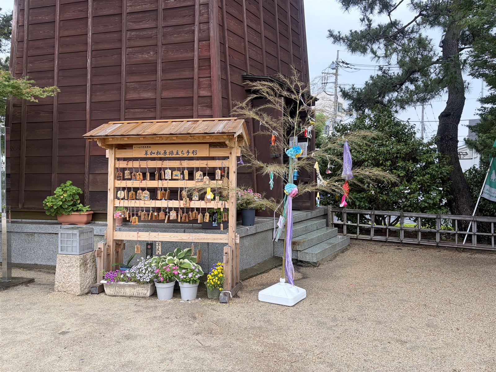

今日は、七夕ですね。
７月になると、ショッピングモールや公民館や学校などで、たくさんの飾りのついた竹を見かけるようになります。先日、買い物に行く途中で草加松原に立ち寄ったら、ここにも七夕飾りが風に揺れていました。
📋 この記事を読むとわかること
- 吹き流し・網飾り・巾着……七夕飾りそれぞれの意味
- 七夕の由来（中国の星伝説×日本の棚機）
- 七夕にそうめんを食べる理由（私は今回初めて知りました）
- 90代・80代・50代、三世代の短冊の願い事
子供の頃の七夕
思い出せば、毎年この時期になると、保育園や小学校の工作の時間に折り紙で吹き流しや輪飾りを作ったり、短冊にお願い事を書いたりして、竹に飾るのが恒例でした。
七夕集会というものもあって、全校生徒が体育館に集められて、色とりどりの飾りとみんなの短冊がついた竹の周りで七夕の歌を歌ったことを、おぼろげながら覚えています。
私が知っていた七夕は、こうです。織姫と彦星がなんらかの理由で天の川のこちらとあちらに引き離されていて、１年に１回、７月７日しか会えない。そして、その日に雨が降ったら、その機会さえなくなってしまうらしい。
時期的に日本は梅雨の真っ只中。子供心に、その日が晴れだと「２人が会えてよかったな」と思い、雨が降れば「１年に１回しかチャンスがないのに、かわいそうに」と思ったものでした。
七夕飾りには、それぞれ意味がある
ちなみに、あの頃なにも考えずに作っていた七夕飾りには、実はそれぞれ意味があるそうです。
- 吹き流し……織姫の織り糸を表す。機織りや裁縫の上達を願う
- 網飾り……漁で使う網。豊漁・豊作、幸せをすくい上げる
- 折鶴……家内安全と長寿。家族の年長者の歳の数だけ折るところも
- 巾着……金運アップと倹約の心
- くずかご……飾りを作ったあとの紙くずを入れて、整理整頓と物を粗末にしない心を育てる
願掛けだけでなく「くずかごに紙くずを入れて飾る」なんていう教育的な飾りまであるのが、なんとも日本らしいなあと思います。子供の頃に知っていたら、巾着を量産していたかもしれません。
短冊が五色（青・赤・黄・白・黒）なのも、中国の五行説から来ているそうです。「♪五しきの たんざく〜」と歌っていたあの歌詞、ちゃんと意味があったんですね。
七夕の由来を調べてみた
なじみのある行事のはずなのに、由来はまったく知らなかったので、今回ちょっと調べてみました。
どうやら、中国の星伝説（牛飼いの牽牛と、機織りの名手の織女のお話）と、織女にあやかって機織りや書道などの芸事の上達を星に祈る中国の宮中行事が日本に伝わり、日本古来の豊作を祈る神事「棚機（たなばた）」と結びついたのがルーツのようです。
何百年も前から、人は星に願い事をしてきたんですね。
旅立ちの町の、願い事
ところで、七夕飾りを見かけた草加松原は、松尾芭蕉が「おくのほそ道」の旅の最初の日にたどり着いた場所として知られています。国指定名勝にもなっている、松並木の美しい旧日光街道です。
ここには「旅立ち手形」という木の札があって、訪れた人がそれぞれの願いや旅立ちへの想いを書いて掛けていきます。

七夕の短冊と旅立ち手形が並んで風に揺れているのを見て、なんだかいいなあと思いました。江戸時代の俳人も、令和の私たちも、やっていることは同じ。願いを書いて、風に揺らして、祈っている。
七夕にそうめん！？（今回初めて知りました）
由来を調べていて、もうひとつ初めて知ったことがあります。七夕には行事食があって、それがそうめんなのだそうです。主婦歴26年、まったく知りませんでした。
ルーツは意外と古くて、中国から伝わった「索餅（さくべい）」という縄のようにねじったお菓子だそうです。７月７日に索餅を食べると１年間病気をしないという言い伝えが、いつしか同じ小麦のそうめんに変わっていったのだとか。
白いそうめんを天の川や織姫の織り糸に見立てる、という説もあって、そちらのほうがロマンチックで私は好きです。
せっかく知ったので、我が家も今夜はそうめんにしようと思います。薬味はたっぷり派です。
90代・80代・50代の短冊
私の母が通っているデイケアサービスでも、毎年七夕のイベントがあるそうです。
母の10歳上のお友達が短冊に書いた願い事が、素直でお茶目すぎて、クスっと笑ってしまいました。
🎋 三世代の短冊
90代のお友達「美味しいものをたくさん食べられますように」
80代の母「家族が健康で過ごせますように」
50代の私「すべての心配事から解放されますように」
年をとると子供に戻るなんて言いますが、あまりに邪気のない願い事で、なんだか感動してしまいました。
さて、私の願い事の中身はというと——老後のお金のこと、介護のこと、子供のことなどなど。絶え間なく続く心配事に、正直疲れ切っている今日この頃です。
でも、90代のお友達の短冊を思い出すと、少しだけ肩の力が抜けます。いつか私も、あんなふうに「美味しいものがたくさん食べられますように」とだけ書ける日が来るといいなあ。
30年後の七夕の私の願い事が「チーズケーキがたくさん食べられますように」になっていることを祈りつつ。みなさんの願い事が叶いますように。
Today, July 7th, is Tanabata — Japan's Star Festival.
Every year around this time, you start seeing bamboo branches decorated with colorful ornaments in shopping malls, community centers, and schools all over Japan. The other day, on my way to do some shopping, I stopped by Soka Matsubara and found Tanabata decorations swaying in the wind there, too.
📋 What you'll find in this article
- What each Tanabata decoration actually means
- Where the festival comes from (a Chinese star legend × an old Japanese rite)
- Why Japanese people eat somen noodles on Tanabata (I only just learned this myself)
- Three generations of wishes — written by women in their 50s, 80s, and 90s
The Tanabata of my childhood
When I was small, this season always meant craft time at kindergarten and elementary school: we folded paper streamers and chain rings from origami, wrote wishes on narrow strips of paper called tanzaku, and hung them all on bamboo branches.
There was even a school-wide "Tanabata assembly" — the whole school gathered in the gym around a bamboo tree covered in everyone's wishes, and we sang the Tanabata song together. I remember it only hazily now, but fondly.
Here is the story every Japanese child knows: Orihime the weaver princess (the star Vega) and Hikoboshi the cowherd (Altair) were separated on opposite banks of the Milky Way, allowed to meet only once a year — on the night of July 7th. And if it rains that night, even that one chance is washed away.
July in Japan is the middle of the rainy season. As a child, I'd feel relieved on a clear Tanabata night — "good, they got to meet" — and genuinely sorry for them when it rained. One chance a year, and it rains!
Every decoration has a meaning
It turns out the decorations I made so carelessly as a child each carry a wish of their own:
- Fukinagashi (streamers) — Orihime's weaving threads; a wish for skill in weaving and sewing
- Amikazari (net ornament) — a fishing net; for good catches, good harvests, and scooping up happiness
- Orizuru (paper cranes) — for family safety and long life; some families fold one for each year of the eldest member's age
- Kinchaku (drawstring purse) — for good fortune with money, and the spirit of thrift
- Kuzukago (wastebasket) — filled with the paper scraps left over from making the other decorations, to teach tidiness and not wasting things
A decorative wastebasket, hung on the bamboo to teach children not to waste paper — that struck me as wonderfully, quintessentially Japanese. If I'd known about the money purse as a child, I would have mass-produced them.
The five colors of the tanzaku strips — blue, red, yellow, white, and black — come from the ancient Chinese theory of the five elements. The children's Tanabata song even mentions "five-colored tanzaku"; the lyrics had real meaning all along.
Where Tanabata comes from
For a festival so familiar, I realized I knew nothing about its origins, so I looked it up.
Tanabata began as a Chinese star legend — the cowherd and the weaver girl — together with a Chinese court ritual in which people prayed to the stars for skill in weaving, calligraphy, and other arts. When these came to Japan, they merged with an ancient native rite called tanabata (棚機), a purification ceremony praying for a good harvest. That blend became the festival we know today.
People have been writing their wishes to the stars for many hundreds of years.
Wishes in the town of departures
Soka Matsubara, where I found these decorations, is known as the place the haiku poet Matsuo Basho reached on the very first day of his journey in Oku no Hosomichi ("The Narrow Road to the Deep North," 1689). It's a beautiful pine-lined stretch of the old Nikko Highway, now designated a National Place of Scenic Beauty.
There's a spot here where visitors hang small wooden plaques called tabidachi tegata — "departure tags" — each written with a wish or a hope for a new journey.
Seeing the Tanabata strips and the wooden travel plaques swaying side by side in the same wind, I thought: an Edo-period poet and we people of today are doing exactly the same thing. Writing down a wish, hanging it in the wind, and praying.
Somen noodles on Tanabata!? (I had no idea)
While reading up on the festival, I learned something else for the first time: Tanabata has a traditional festival food, and it's somen — thin white wheat noodles served cold. Twenty-six years as a homemaker, and I never knew.
The custom goes back surprisingly far, to a twisted rope-shaped Chinese confection called sakubei. Eating it on July 7th was said to protect you from illness for a year, and over the centuries the custom shifted to somen, made from the same wheat.
There's also a lovelier theory: that the thin white noodles represent the Milky Way, or Orihime's weaving threads. I much prefer that version.
Now that I know, we're having somen tonight. With plenty of condiments — I'm firmly in that camp.
Three generations, three wishes
My mother attends a day-care service for seniors, and they hold a Tanabata event every year, complete with wishes on tanzaku.
This year, the wish written by my mother's friend — who is ten years her senior, in her nineties — was so honest and charming that I burst out laughing:
🎋 Wishes across three generations
Her friend, in her 90s: "May I eat lots and lots of delicious things."
My mother, in her 80s: "May my family stay healthy."
Me, in my 50s: "May I be freed from all my worries."
They say we return to childhood as we grow old. There was something so utterly guileless about that wish that it moved me more than it made me laugh.
As for the contents of my own wish — money for retirement, my mother's care, my grown children. The worries never stop coming, and honestly, I'm worn out by them these days.
But when I think of that tanzaku written by a woman in her nineties, my shoulders relax a little. I hope that someday I, too, can write nothing more than "may I eat lots of delicious things."
Thirty years from now, may my Tanabata wish be "plenty of cheesecake, please." And may all of your wishes come true.